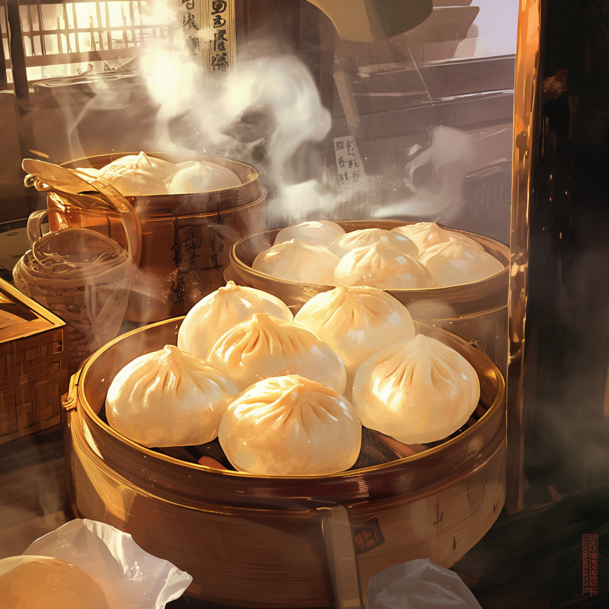

Home
Char Siu Bao

Description
This Chinese Steamed BBQ Pork Buns (Char Siu Bao) recipe unlocks the secret to the perfect steamed pork bun just like you get at the dim sum restaurant.
Ingredients
For the steamed cha siu bao dough:
- 1 teaspoon active dry yeast
- ¾ cup warm water
- 2 cups all-purpose flour
- 1 cup cornstarch
- 5 tablespoons sugar
- 1/4 cup canola or vegetable oil
- 2 1/2 teaspoons baking powder
- 1-2 teaspoons water (optional)
For the steamed bao filling:
- 1 tablespoon oil
- 1/3 cup shallots or red onion (finely chopped)
- 1 tablespoon sugar
- 1 tablespoon light soy sauce
- 1 1/2 tablespoons oyster sauce
- 2 teaspoons sesame oil
- 2 teaspoons dark soy sauce
- 1/2 cup chicken stock
- 2 tablespoons all purpose flour
- 1 1/2 cups diced Chinese roast pork
Steps
- In the bowl of an electric mixer fitted with a dough hook attachment (you can also just use a regular mixing bowl and knead by hand), dissolve the yeast in the warm water. Sift together the flour and cornstarch, and add it to the yeast mixture along with the sugar and oil. Turn on the mixer to the lowest setting and let it go until a smooth dough ball is formed. Cover with a damp cloth and let it rest for 2 hours. (I haven't forgotten about the baking powder. You'll add that later!)
- While the dough is resting, make the meat filling. Heat the oil in a wok over medium high heat. Add the onion and stir-fry for a minute. Turn heat down to medium-low, and add the sugar, soy sauce, oyster sauce, sesame oil, and dark soy. Stir and cook until the mixture starts to bubble up. Add the chicken stock and flour, cooking for a couple minutes until thickened. Remove from the heat and stir in the roast pork. Set aside to cool. If you make the filling ahead of time, cover and refrigerate to prevent it from drying out.
- After your dough has rested for 2 hours, add the baking powder to the dough and turn the mixer on to the lowest setting. At this point, if the dough looks dry or you're having trouble incorporating the baking powder, add 1-2 teaspoons water. Gently knead the dough until it becomes smooth again. Cover with a damp cloth and let it rest for another 15 minutes. In the meantime, get a large piece of parchment paper and cut it into ten 4×4 inch squares. Prepare your steamer by bringing the water to a boil.
- Now we are ready to assemble the buns: roll the dough into a long tube and divide it into 10 equal pieces. Press each piece of dough into a disc about 4 1/2 inches in diameter (it should be thicker in the center and thinner around the edges). Add some filling and pleat the buns until they’re closed on top.
- Place each bun on a parchment paper square, and steam. I steamed the buns in two separate batches using a bamboo steamer (be sure the boiling water does not touch the buns during steaming process). Once the water boils, place the buns in the steamer and steam each batch for 12 minutes over high heat.